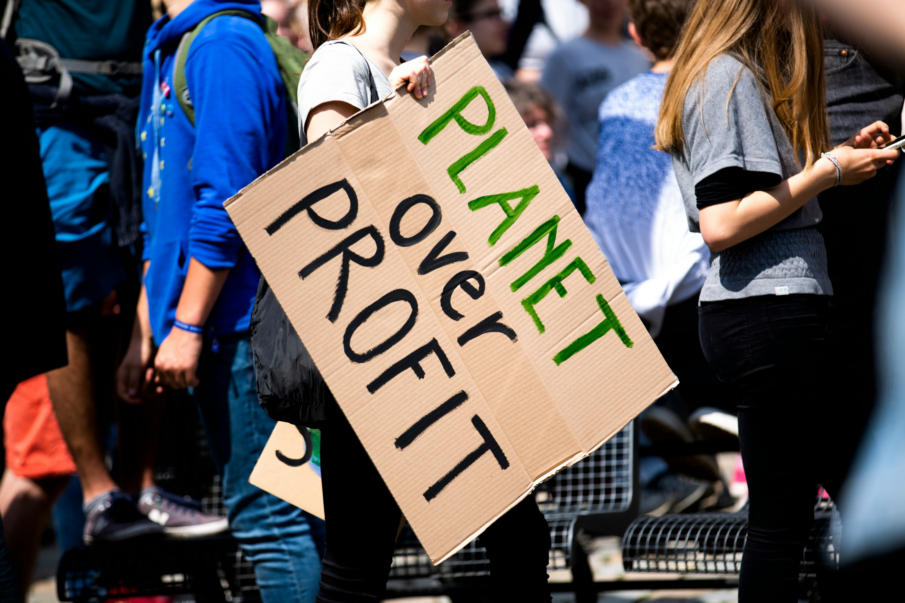

Paragraph: Graceful, adorable and decidedly not friendly, the world's big cat populations are under significant threat. There are seven recognized big cat species: tigers, lions, jaguars, leopards, snow leopards, cheetahs, and cougars. Belonging to the Felidae family, these cats split from their domesticated relatives in the Felinae family over 6 million years ago. Tigers, lions, jaguars, leopards, and snow leopards are members of the Panthera genus, while cheetahs belong to the Acinonyx genus and cougars to the Puma genus.
According to the IUCN Red List - a comprehensive inventory of animal species' conservation status - tigers are classified as Endangered, while lions, leopards, snow leopards, and cheetahs are categorized as Vulnerable. Jaguars are listed as Near Threatened, and cougars are currently considered Least Concern. Habitat loss, climate change and human impacts pose the primary threat to big cat species. This matters because the extinction of any big cat species could spell profound and far-reaching consequences to the carefully-balanced ecosystems they inhabit.
Heading: How to Help
There are several effective ways to contribute to big cat conservation efforts. One way to help is by adopting conscious consumption habits by choosing sustainable and environmentally friendly products. Another approach is to advocate for conservation, whether through social media posts or by petitioning representatives to enact protective legislation to big cats. One can also volunteer to maintain nature through cleanup initiatives. Finally, donations to reputable charities dedicated to big cat conservation is one of the most effective ways to advocate.
List of Charities
- The Big Cat Initiative: Focuses on protecting big cats worldwide by spreading awareness.
- Panthera: Dedicated to the conservation of big cats and their ecosystem through research.
- Wildlife Conservation Society: Aims to save wildlife and wildlife habitats through education and conservation action.
- The Wild Animal Sanctuary: Rescues and provides lifetime care for captive big cats.
- Born Free Foundation: Works to protect threatened species and end the exploitation and captivity of wildlife.